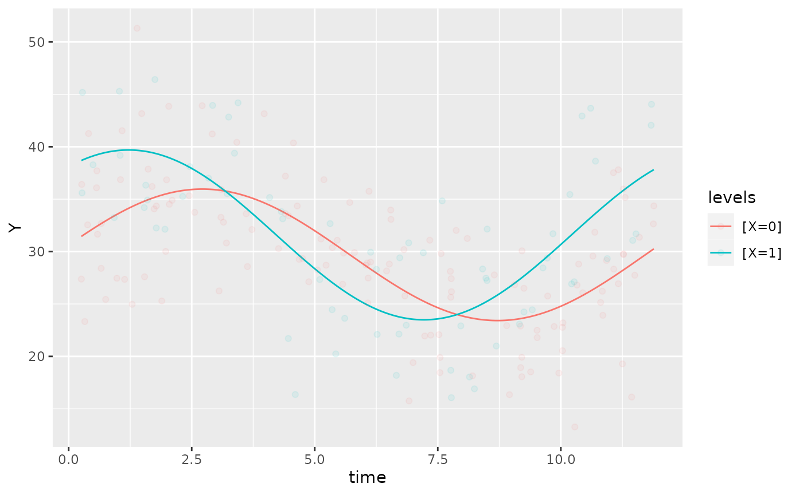

library(GLMMcosinor)
library(dplyr)
#>
#> Attaching package: 'dplyr'
#> The following objects are masked from 'package:stats':
#>
#> filter, lag
#> The following objects are masked from 'package:base':
#>
#> intersect, setdiff, setequal, union
testdata_simple <- simulate_cosinor(1000,
n_period = 2,
mesor = 5,
amp = 2,
acro = 1,
beta.mesor = 4,
beta.amp = 1,
beta.acro = 0.5,
family = "poisson",
period = c(12),
n_components = 1,
beta.group = TRUE
)
testdata_two_components <- simulate_cosinor(1000,
n_period = 10,
mesor = 7,
amp = c(0.1, 0.4),
acro = c(1, 1.5),
beta.mesor = 4.4,
beta.amp = c(2, 1),
beta.acro = c(1, -1.5),
family = "poisson",
period = c(12, 6),
n_components = 2,
beta.group = TRUE
)
testdata_multicomponent <- simulate_cosinor(1000,
n_period = 10,
mesor = 7,
amp = c(0.1, 0.4, 0.5),
acro = c(1, 1.5, 0.1),
beta.mesor = 4.4,
beta.amp = c(2, 1, 0.4),
beta.acro = c(1, -1.5, -1),
family = "poisson",
period = c(12, 6, 12),
n_components = 3,
beta.group = TRUE
)
data(vitamind)
object <- cosinor.glmm(Y ~ X + amp_acro(time,
n_components = 1, period = 12,
group = "X"
), data = vitamind)
autoplot(object, superimpose.data = TRUE, x_str = "X", predict.ribbon = FALSE, data_opacity = 0.08)
Introduction
The GLMMcosinor package allows the user to fit
generalised linear models based on circadian data, and allows users to
summarise, predict, and plot based on this modelling. Existing packages
have focused primarily on Gaussian data. Some circadian regression
modelling packages have allowed users to specify generalised linear
models, but with limited flexibility. GLMMcosinor takes a comprehensive
approach to modelling by utilising the glmmTMB package, which allows
users to model circadian data from a wide range of distributions (for
full list - see ?family and
?glmmTMB::family_glmmTMB) including:
- Binomial
- Guassian
- Inverse Gaussian
- Gamma
- Poisson
- Negative Binomial
The table below shows what features are available within GLMMcosinor and other methods.
Software |
Language |
Multicomponent |
Dispersion model |
Zero-inflated model |
Differential rhythmicity |
Parameter estimates for differences |
Family (available link functions) |
Estimated parameters |
Reference |
|---|---|---|---|---|---|---|---|---|---|
GLMMcosinor |
R |
✓ |
✓ |
✓ |
✗ |
✓ |
n > 15 Any family avilable in {glmmTMB}: Gaussian, gamma, binomial, Poisson, … |
Amplitude, acrophase, MESOR |
Parsons, 2023 |
CircaCompare |
R |
✗ |
✗ |
✗ |
✗ |
✓ |
n = 1 Gaussian |
Amplitude, acrophase, MESOR, and exponential decay of any of these characteristics or the differences in them between groups |
Parsons, 2020 |
Cosinor |
R |
✗ |
✗ |
✗ |
✓ |
✓ |
n = 1 Gaussian |
Amplitude, acrophase, MESOR |
Sachs, 2014 |
Cosinor2 |
R |
✗ |
✗ |
✗ |
✓ |
✓ |
n = 1 Gaussian |
Amplitude, acrophase, MESOR |
Mutak, 2018 |
CosinorPy |
Python |
✓ |
✗ |
✗ |
✓ |
✓ |
n = 3 Gaussian, Poisson, negative-binomial |
Amplitude, acrophase, MESOR |
Moskon, 2020 |
DiscoRhythm |
R |
✗ |
✗ |
✗ |
✗ |
✗ |
n = 1 Gaussian |
Amplitude, acrophase |
Carlucci, 2019 |
FMM |
R |
✓ |
✗ |
✗ |
✗ |
✓ |
n = 1 Gaussian |
Amplitude, FMM phase angle parameters: alpha, beta, gamma |
Fernández, 2022 |
Kronos |
R |
✓ |
✗ |
✗ |
✓ |
✓ |
n = 1 Gaussian |
Amplitude, acrophase, MESOR |
Singer, 2019 |
LimoRhyde |
R |
✗ |
✗ |
✗ |
✓ |
✓ |
n = 1 Gaussian |
Amplitude, acrophase, MESOR, period |
Singer, 2019 |
RhythmCount |
Python |
✓ |
✗ |
✓ |
✗ |
✓ |
n = 6 Poisson, generalised-Poisson, zero-inflated Poisson, negative binomial, zero-inflated negative-binomial |
Amplitude, acrophase, MESOR, Zenith |
Velikajne, 2022 |
cosinor.glmm()
cosinor.glmm() wrangles the data appropriately to fit
the cosinor model given the formula specified by the user. It provides
estimates of amplitude, acrophase, and MESOR (Midline Statistic Of
Rhythm).
The formula argument for cosinor.glmm() is specified
using the lme4 style (for details see
vignette("lmer", package = "lme4")). The only difference is
that it allows for use of an amp_acro() call within the
formula that is used to identify the circadian components and relevant
variables in the data.frame. Any other combination of
covariates can also be included in the formula as well as random effects
and zero-inflation (ziformula) and dispersion
(dispformula) formulae. For detailed examples of how to
specify models, see the mixed-models,
model-specification
and multiple-components
vignettes.
An overview of the statistical methods used for parameter estimation
The GLMMcosinor package provides estimates of amplitude (\(A\)), acrophase (\(\phi\)), and MESOR (\(M\)). In the single-component case, these parameters correspond to the following regression model:
\[Y(t) = M + Acos(\frac{2\pi t}{\tau} + \phi) + e(t)\] where \(e(t)\) is the error term.
This model can be equivalently expressed as a generalised linear model:
\[Y(t) = M + \beta x + \gamma z + e(t)\]
Where \(x =cos(\frac{2\pi t}{τ}\times \pi)\), \(z =sin(\frac{2\pi t}{τ}\times \pi)\), \(\beta = A cos(\phi)\), \(\gamma = -A sin(\phi)\)
In our code, the amp_acro() function will modify the
dataset supplied in the cosinor.glmm() call by creating two
transformed columns of data: rrr and sss which
take the role of \(x\) and \(z\) respectively from the equation above.
‘rrr’ and ‘sss’ are treated as variables, and the estimates of their
coefficients are therefore \(\hat\beta\) and \(\hat\gamma\). These estimates are what is
presented in as ‘Raw Coefficients’ in the output of the
cosinor.glmm() function. Depending on the model
specification, an estimate for MESOR (‘(Intercept)’) may be present and
this does not need to be transformed. For this reason, the MESOR terms
will be the same in both the raw and transformed coefficient tables in
the output. But, to get the estimates for amplitude (\(A\)) and acrophase (\(\phi\)), the estimates for \(\hat\beta\) and \(\hat\gamma\) must be transformed as per the
following equations:
\[\hat\phi = \arctan(\frac{-\hat\gamma}{\hat\beta}) \]
\[\hat A = (\hat\beta ^2 + \hat\gamma ^ 2) ^ \frac{1}{2} \]
These transformations are handled by the internal function
get_new_coefs() inside the data_utils.R
script. The result of these transformations is what is presented in the
‘Transformed Coefficients’ table as part of the
cosinor.glmm() output.
For example, consider the following model and its output:
data(vitamind)
cosinor.glmm(Y ~ X + amp_acro(time, period = 12, group = "X"), data = vitamind)
#>
#> Conditional Model
#>
#> Raw formula:
#> Y ~ X + X:main_rrr1 + X:main_sss1
#>
#> Raw Coefficients:
#> Estimate
#> (Intercept) 29.68980
#> X1 1.90186
#> X0:main_rrr1 0.93079
#> X1:main_rrr1 6.51029
#> X0:main_sss1 6.20099
#> X1:main_sss1 4.81846
#>
#> Transformed Coefficients:
#> Estimate
#> (Intercept) 29.68980
#> [X=1] 1.90186
#> [X=0]:amp 6.27046
#> [X=1]:amp 8.09947
#> [X=0]:acr -1.42181
#> [X=1]:acr -0.63715Notice how both the raw and transformed coefficients are provided as
output. Also, notice how the dataframe is modified to include
main_rrr1 and main_sss1 columns of data. This
is the data that the glmmTMB() function fits a regression
model to:
head(object$newdata)
#> X Y time main_rrr1 main_sss1
#> 1 0 16.12091 11.439525 0.9572476 -0.2892699
#> 2 0 29.90624 5.807104 -0.9949038 0.1008285
#> 3 1 39.17572 1.045492 0.8538711 0.5204846
#> 4 1 35.15403 4.082983 -0.5371451 0.8434899
#> 5 1 43.67065 10.606247 0.7453295 -0.6666963
#> 6 0 31.20360 5.126054 -0.8971168 0.4417935In this example, the main prefix indicates that this is
the data for the conditional model, as opposed to potential dispersion
or zero-inflation models which have the prefixes disp and
zi respectively. The numeric suffix 1 indicates that this
is the data for component 1. If there are multiple components, the
columns of data will be named accordingly. These naming conventions are
consistent throughout the GLMMcosinor package.
The transformations behind multi-component models follow the same principles, and a more detailed discussion of this process in addition to the other statistics used in this package can be found in ‘Cosinor-based rhythmometry’ (Cornelissen, 2014).
A basic overview of cosinor.glmm()
The cosinor.glmm() function is used to fit cosinor
models to a variety of distributions using the glmmTMB()
function.
formula <- Y ~ amp_acro(time, period = 12)
data <- vitamind
family <- gaussian
cosinor.glmm(formula, data, family)
#>
#> Conditional Model
#>
#> Raw formula:
#> Y ~ main_rrr1 + main_sss1
#>
#> Raw Coefficients:
#> Estimate
#> (Intercept) 30.25467
#> main_rrr1 2.59418
#> main_sss1 5.75079
#>
#> Transformed Coefficients:
#> Estimate
#> (Intercept) 30.25467
#> amp 6.30883
#> acr -1.14703-
formula: A formula specifying the model structure, including the response variable and the cosinor components. The formula specification relies on theamp_acrofunction to handle the transformations. This formula is outlined below. -
data: The dataset containing the variables used in the formula. -
family: The family of the distribution for the response variable (e.g., poisson, gaussian, or any family found in?familyand?glmmTMB::family_glmmTMB)
The amp_acro() function is used within the formula to
specify the cosinor components. It allows you to control the grouping
structure, rhythm period, and the number of components. The arguments of
amp_acro() include:
-
group: The name of the grouping variable in the dataset. -
time_col: The name of the time column. -
n_components: The number of components in the cosinor model. -
period: The period(s) of the rhythm.
Understanding the output
The most important output from the cosinor.glmm()
function is likely to be the parameter estimates for MESOR, amplitude,
and acrophase under the ‘Transformed Coefficients’ heading. A detailed
explanation of the difference between the raw coefficients and the
transformed coefficients is found in this vignette, in the ‘An
overview of the statistical methods used for parameter
estimation’ section.
The following example looks at a grouped single-component model based
on a Gaussian distribution from the vitamind dataset.
data(vitamind)
cosinor.glmm(Y ~ X + amp_acro(time, period = 12, group = "X"), data = vitamind)
#>
#> Conditional Model
#>
#> Raw formula:
#> Y ~ X + X:main_rrr1 + X:main_sss1
#>
#> Raw Coefficients:
#> Estimate
#> (Intercept) 29.68980
#> X1 1.90186
#> X0:main_rrr1 0.93079
#> X1:main_rrr1 6.51029
#> X0:main_sss1 6.20099
#> X1:main_sss1 4.81846
#>
#> Transformed Coefficients:
#> Estimate
#> (Intercept) 29.68980
#> [X=1] 1.90186
#> [X=0]:amp 6.27046
#> [X=1]:amp 8.09947
#> [X=0]:acr -1.42181
#> [X=1]:acr -0.63715Under the ‘Transformed Coefficients’ heading:
(Intercept) = 29.6898is the MESOR estimate of group 0[X=1] = 1.90186is the difference between the MESOR estimates of group 1 and 2 *[X=0]:amp = 6.27046is the amplitude estimate for group 0[X=1]:amp = 8.09947is the amplitude estimate for group 1[X=0]:acr = -1.42181is the acrophase estimate for group 0[X=1]:acr = -0.63715is the acrophase estimate for group 1
* Hence, the MESOR estimate for group 1 would be
29.6898 + 1.90186 = 31.59166. This is due to the behaviour
of the glmmTMB() function. This can be adjusted by adding a
0 + to the beginning of the formula:
data(vitamind)
cosinor.glmm(Y ~ 0 + X + amp_acro(time, period = 12, group = "X"), data = vitamind)
#>
#> Conditional Model
#>
#> Raw formula:
#> Y ~ X + X:main_rrr1 + X:main_sss1 - 1
#>
#> Raw Coefficients:
#> Estimate
#> X0 29.68980
#> X1 31.59165
#> X0:main_rrr1 0.93079
#> X1:main_rrr1 6.51029
#> X0:main_sss1 6.20101
#> X1:main_sss1 4.81847
#>
#> Transformed Coefficients:
#> Estimate
#> [X=0] 29.68980
#> [X=1] 31.59165
#> [X=0]:amp 6.27048
#> [X=1]:amp 8.09948
#> [X=0]:acr -1.42181
#> [X=1]:acr -0.63716Note how now, [X=1] = 31.59165 and this represents the
estimate for the MESOR for group 1, rather than the difference.
More advanced cosinor.glmm() model specification
The cosinor.glmm() function allows you to specify
different types of cosinor models with or without grouping variables.
The function can also generate dispersion models and zero-inflation
models in addition to the conditional model that is generated by
default. For more detailed explanations and examples, see the model-specification
article.
Additionally, the cosinor.glmm() function provides more
advanced functionalities for multi-component models, and detailed
explanations can be found in the multiple-components
article.
The cosinor.glmm() function also allows mixed model specification. See the mixed-models article for more details.
Using summary()
The summary() method for cosinor.glmm
objects provides a more detailed summary of the model and its parameter
estimates and uncertainty. It outputs the estimates, standard errors,
confidence intervals, and p-values for both the raw model parameters and
the transformed parameters. The summary statistics do not represent a
comparison between any groups for the cosinor components - that is the
role of the test_cosinor_components() and
test_cosinor_levels() functions.
Here is an example of how to use summary():
object <- cosinor.glmm(Y ~ group + amp_acro(times, period = 12, group = "group"), data = testdata_simple, family = poisson())
summary(object)
#>
#> Conditional Model
#> Raw model coefficients:
#> estimate standard.error lower.CI upper.CI p.value
#> (Intercept) 4.996897043 0.003507336 4.990022790 5.00377 < 2.22e-16
#> group1 -0.992254309 0.005929334 -1.003875590 -0.98063 < 2.22e-16
#> group0:main_rrr1 1.080439664 0.003352984 1.073867937 1.08701 < 2.22e-16
#> group1:main_rrr1 0.872496192 0.006325846 0.860097762 0.88489 < 2.22e-16
#> group0:main_sss1 -1.688861736 0.003940962 -1.696585881 -1.68114 < 2.22e-16
#> group1:main_sss1 -0.476000935 0.005748628 -0.487268039 -0.46473 < 2.22e-16
#>
#> (Intercept) ***
#> group1 ***
#> group0:main_rrr1 ***
#> group1:main_rrr1 ***
#> group0:main_sss1 ***
#> group1:main_sss1 ***
#> ---
#> Signif. codes: 0 '***' 0.001 '**' 0.01 '*' 0.05 '.' 0.1 ' ' 1
#>
#> Transformed coefficients:
#> estimate standard.error lower.CI upper.CI p.value
#> (Intercept) 4.996897043 0.003507336 4.990022790 5.00377 < 2.22e-16 ***
#> [group=1] -0.992254309 0.005929334 -1.003875590 -0.98063 < 2.22e-16 ***
#> [group=0]:amp1 2.004894968 0.004294992 1.996476939 2.01331 < 2.22e-16 ***
#> [group=1]:amp1 0.993894609 0.007587174 0.979024021 1.00877 < 2.22e-16 ***
#> [group=0]:acr1 1.001664558 0.001439281 0.998843619 1.00449 < 2.22e-16 ***
#> [group=1]:acr1 0.499429681 0.006541594 0.486608392 0.51225 < 2.22e-16 ***
#> ---
#> Signif. codes: 0 '***' 0.001 '**' 0.01 '*' 0.05 '.' 0.1 ' ' 1Using predict()
The predict() method for cosinor.glmm
objects allows users to get predicted values from the model on either
the existing or new data. (These predicted values are used when
generating the plots using plot().)
fit <- cosinor.glmm(Y ~ group + amp_acro(times, period = 12, group = NA), data = testdata_simple, family = poisson())
head(predict(fit))
#> [1] 3.698703 3.735857 5.024884 5.295314 5.591113 5.081111Plotting cosinor.glmm objects
The GLMMcosinor package includes two ways to visualise
cosinor.glmm() objects. Firstly, the
autoplot() method creates a time-response plot of the
fitted model for all groups:
object <- cosinor.glmm(Y ~ group + amp_acro(times, period = 12, group = "group"), data = testdata_simple, family = poisson())
autoplot(object, superimpose.data = TRUE)
This function also allows users to superimpose the data (that was
used to fit the model) over the fitted model, using the
superimpose.data = TRUE, as demonstrated above. By default,
the generated plot will have x-limits corresponding to the minimum and
maximum values of the time-vector in the original dataframe, although
the x-limits can be manually defined by the user using the
xlims argument. The details of using the
autoplot function are found in the model-visualisations
vignette.